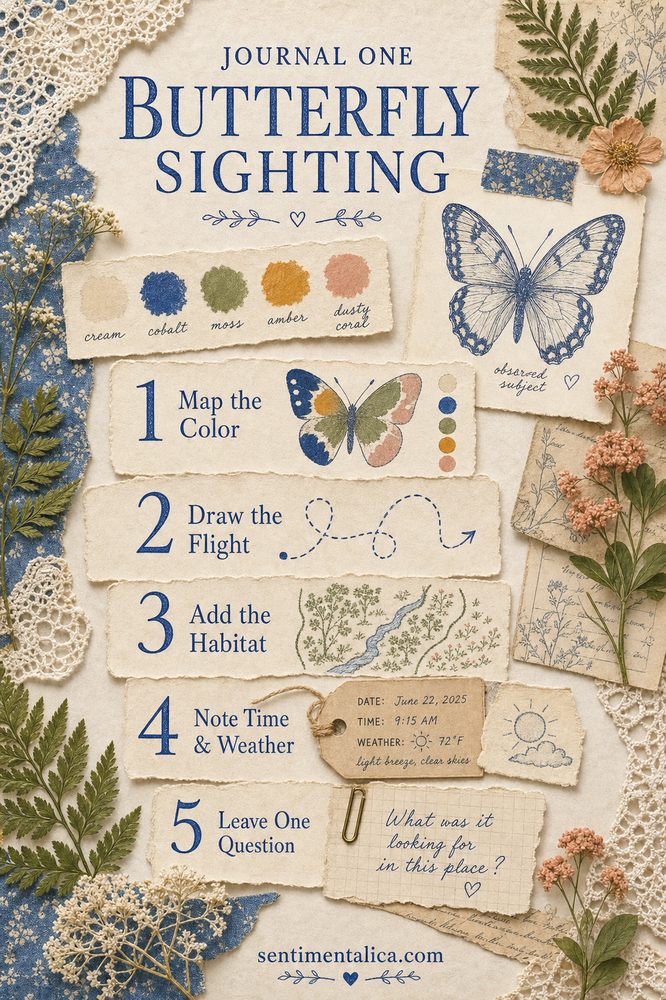
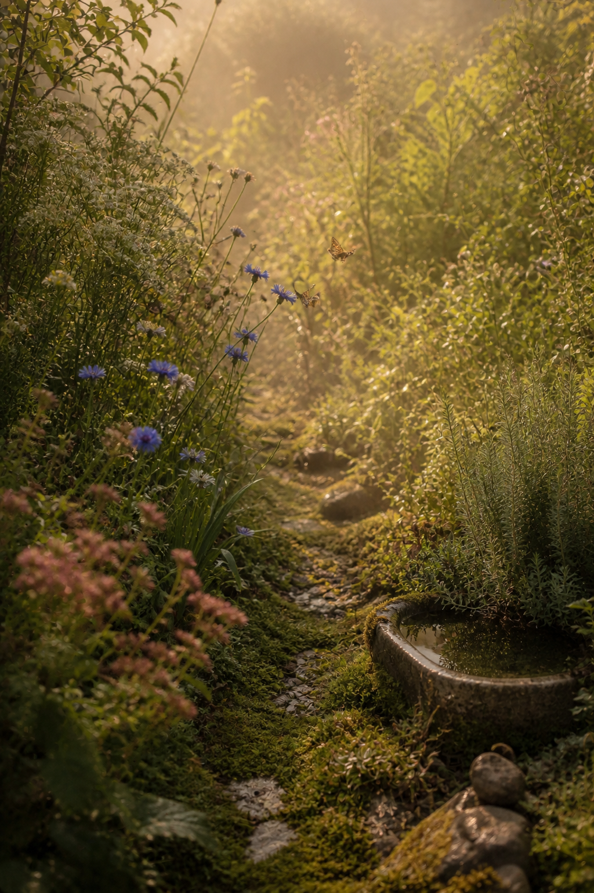

A butterfly journal page becomes more interesting when it records an encounter rather than displaying a collection of unrelated wings. Begin with one butterfly you actually saw, even briefly, and let the page hold what you know, what you noticed, and what remains uncertain.
Do not capture or disturb the butterfly. Make a quick note or photograph from a respectful distance, then build the page later from observation and reference material.

Record the color as a pattern
Instead of writing only “orange,” notice where the color appeared. Was the edge dark, the center pale, or one tiny spot unexpectedly blue? Make three or four swatches and draw simple marks showing their placement.
Color may shift in shade or motion, so write the lighting too. “Warm orange in sun, brown when closed” is a useful observation.
Draw the flight rather than the insect
A curved line, repeated loop, or short broken path can preserve movement without requiring a detailed illustration. Mark where the butterfly rested and whether it returned to the same plant.
Use three verbs: floated, paused, darted. The sequence gives the page life and may help with identification later.

Add the habitat clue
Record the flower, leaf, wall, path, or damp ground around the sighting. A tiny map can show where you stood and where the butterfly appeared. Habitat belongs to the story as much as the wings.
Add the date, time, temperature feeling, and weather. Repeated sightings may reveal a pattern you would otherwise miss.
Leave room for uncertainty
Write a possible identification in pencil or on a removable label. Note what supports it and what does not: shape, markings, season, or range. A question mark is honest field notation, not an unfinished page.
Finish with one question for the next encounter: Did it visit the same flower? Were the wings different underneath? Did another butterfly follow the same route?
Extend the naturalist mood with printable imagery
When you want more specimen imagery than one real sighting can provide, use a coherent printable collection as the supporting visual layer. Keep your own observation as the heart of the spread, then add one vintage butterfly or moth image, a label, and a small botanical fragment around it.
The live Butterfly Study collection is suited to this mood because its butterfly, moth, insect, and vintage-paper imagery can support field-note pages without requiring you to collect real specimens.
Use the printable art as creative material rather than evidence of what you saw. Label the observed butterfly and decorative reference imagery separately so the memory stays truthful.
One butterfly, carefully noticed, can hold more story than a page filled with anonymous wings.
Find more gentle observation-led journal ideas in the Sentimentalica journal.